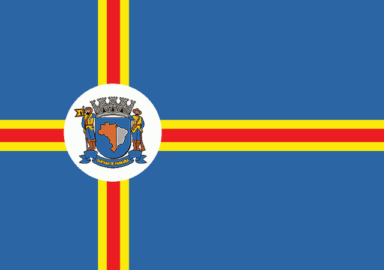

Hino das cidades de São Paulo
Link quinto programa
Hino de São Caetano do Sul

São Caetano, pequeno gigante
Sob um céu estrelado e de anil
És cidade, trabalho, és progresso,
És infante do nosso Brasil.
Do Passado nos resta a lembrança
De heróis que souberam te erguer
Para frente, para frente,
São Caetano, tu tens que crescer.
Do Triângulo jóia rara,
Dá exemplo do teu vigor
E tua luta não pára,
É grande o teu valor. (Bis)
Mais e mais chaminés se levantam,
Apitos fazem-se ouvir;
Do trabalho é tua glória,
De grandeza será teu porvir.
No futuro será monumento
O Brasil saberá te eleger.
Para frente, para frente,
São Caetano, tu tens que crescer.
Hino de Águas de São Pedro

Unidos cantemos
com fé e ardor
Nossa terra saudemos
Com este hino de amor
Tu tens a beleza
das serras e os montes
e tens a riqueza
das tuas fontes
Tuas águas são verdes
da cor da esperança
teu céu azulado
inspira confiança
Águas de São Pedro
só tu entre mil
és orgulho do Brasil
Nesta cadência
de bons soldados
em continência
ao berço amado
todos clamados
a deus por ti
Águas de São Pedro
só tu entre mil
és o orgulho do Brasil.
Hino de São Paulo

São Paulo teu jesuíta
Com seu colégio predominou
São Paulo teu bandeirante
Fez uma estrada, não mais parou
São Paulo teu operário
Da ferramenta fez devoção
E agora de toda parte
São Paulo inteiro faz mutirão
São Paulo de pau e pedra
São Paulo de pedra e cal
São Paulo fazendo a ponte
Do progresso nacional
São Paulo de uma semente
Fez o milagre da progressão
São Paulo de uma oficina
Fez uma industria com precisão
São Paulo de uma semente
Fez o milagre da progressão
São Paulo de uma oficina
Fez uma industria com precisão
São Paulo, braço de aço
Rodando a roda do seu trator
Do meio da engrenagens
Nasceu uma rosa, cheia de amor
São Paulo é assim!
Hino de Jundiaí

Ó terra querida, Jundiaí
Teus filhos amantes são de ti
Que Deus abençoe eternamente
Esta terra onde nasci
Ó terra querida, Jundiaí
Teus filhos amantes são de ti
Saudades mil levam
Os que passam por aqui
Terra gentil, altruísta,
De ti me orgulho,
Pois és bem paulista!
Teus filhos com devoção
Marcham pr´a luta como heróis
Cheios de fé em sua oração
Que belas tardes amenas!
Que lindas noites,
Felizes, serenas!
Teu jardim, é um paraíso
Onde a mocidade sempre jovial
Com seu odor confunde o riso.
Quem poderia imitar
O teu céu com tuas cores?
Com teus lindos fulgores?
Os teus campos, tuas flores?
Só a natureza guiada pelo Criador
É que pode pintar esse arrebol!
Que jamais vi,
Tardes ao por do Sol.
Hino de Santos
.svg.png)
Santos poema, jardins pela praia
Cidade e porto de mar
Tens a magia de barcos estranhos
Na barra esperando adentrar
Morros, varandas alegres
Suspensas no arvoredo
Santos das ruas antigas
À beira do cais
Que escondem segredos
Tuas paineiras floridas
Salgueiros que choram
Nos velhos canais
Santos, cuidado menina
As tuas belezas
Não percas jamais
Os flamboiãs florescentes
Palmeiras imperiais
Ilha Urubuqueçaba
O verde reduto
Nas ondas do mar
Oh! Santos
És linda demais !
Hino de Valinhos

Meu torrão natal!
Valinhos,
Terra sem igual!
À sombra da Bandeira,
Tu te ergues altaneira,
Em busca de um ideal!
Terra do figo roxo,
Vales e montes mil;
Ergue-se um colosso,
Num gesto, a mão gentil!
Terra das belas artes,
Fontes e encantos mil;
Teu povo bandeirante
Inspira amor febril!
Qual Éden de Deus presente,
Pedacinho reluzente
Do meu imenso Brasil!
Hino de Vinhedo

Vinhedo nativa - imigrante
És impoluta - luz e cor
Soberba, vibrante
És trabalho, arrojo, vigor
Atalaia de amor sem recesso
Que esta gente cobre de glória
No esplendor da "Reta do Progresso"
Começa Vinhedo a tua história
De Rocinha a Vinhedo - laços antigos
De valor heróico feito gigante
Troncos afins de um povo destemido
Ergue a Terra de Sant'Ana triunfante
Que floreça Vinhedo - eis o grito
Nas conquistas do bandeirante que és
Que hás de impelir para o infinito
A velha Anhanguera batiza teus pés
Neste negro asfalto traz esperança
Das duas estradas mirabolantes
Agricultura que traz confiança
Da terra fértil, uma gente confiante
Verdes vinhais, como o sol ardente
Brindam a pátria querida
Onde os beijos dos ventos germinam as sementes
Onde os beijos do amor germinam a vida
Avante, avante, avante
No galhardão de conquista
Salve, salve
Vinhedo, terra paulista
Terra bendita, palpitante
Filha morena dos olhos teus
Levante e parta desafiante
Arranque o madeiro dos ombros de "Deus"
Os teus astros são anjos pendidos
Nas frouxas neblinas da amplidão
Neste solo paulista querido
Pobre ou rico ame este rincão
E da fibra, justiça e valor
No ardor do trabalho e da paz
Nas lides que floresce o amor
Nunca deram passos atrás
Orvalhada pela beleza da imensidão
Terra loira "Dourada de Esplendor"
Céu azul a repartir cor pela vastidão
És também a "Morada do Senhor"
Oh! Brava gente de incomparável imagem
Meiga de semblante varonil
Tua vida será sempre uma mensagem
Por São Paulo e pelo Brasil
Avante, avante, avante
No galhardão de conquista
Salve, salve
Vinhedo, terra paulista
Hino de Santo André

Santo André, livre terra querida,
Forja ardente de amor e trabalho,
Em teu solo semeias a vida,
Em teus lares ha pão e agasalho.
Salve, salve, torrão Andreense
Gigantesco viveiro industrial!
Teu formoso destino pertence
Aos que lutam por um ideal!
Três figuras de heróis bandeirantes
Isabel, 0 Cacique e 0 Reinol
Constituíram Os troncos gigantes
Das famílias paulistas de escol.
Salve, salve, torrão Andreense
Gigantesco viveiro industrial!
Teu formoso destino pertence
Aos que lutam por um ideal!
Se tu foste, no início, um castigo
Hoje es benção dos céus sobre nos.
Santo André , 0 teu nome bendigo,
Berço e tumba de nossos avós.
Salve, salve, torrão Andreense
Gigantesco viveiro industrial!
Teu formoso destino pertence
Aos que lutam por um ideal!
Eia, pois, a caminho da glória,
Santo André do herói quinhentista!
Tu serás para sempre na história
Marco zero da história Paulista!
Salve, salve, torrão Andreense
Gigantesco viveiro industrial!
Teu formoso destino pertence
Aos que lutam por um ideal!
Hino de Araraquara

Araraquara, tu nasceste
de uma lenda e uma poesia
crença tupi que além das serras
surgindo o sol ali morava o dia
tendo por bandeira a lenda
aqui chegou, Pedro José Neto
sonhando ergueu a sua tenda
sob teu céu, o seu primeiro teto
Araraquara ensolarada
o sol é o teu coração
as tuas tardes são douradas
es meu querido torrão
Araraquara terra amada
Aracoara da língua tupi
tu és morada é manhã nascendo
nome acalento que foi dado a ti
Amo, meu berço Natal
Onde pisaram bravos bandeirantes
Eu canto as maravilhas tuas,
Legado eterno desses teus gigantes
Araraquara ensolarada
o sol é o teu coração
as tuas tardes são douradas
és meu querido torrão
Araraquara adorada
tu és morada e filha do sol
explendoroza é tua alvorada
e repousante o teu arrebol
Creio no teu bravo povo
no amanhã e na tua glória
teus jovens seguirão confiantes
novos gigantes desta tua história
Araraquara ensolarada
o sol é o teu coração
as tuas tardes são douradas
és meu querido torrão
Hino de Santana de Parnaíba

Santana de Parnaíba
Berço de heróis consagrados
Cidade dos Bandeirantes
Deste solo muito amado
Com orgulho festejamos
O dia dos Bandeirantes!
SALVE! ANHANGUERA, BORBA GATO,
FERNÃO e SUZANA DIAS
BRAVOS HERÓIS DO PASSADO.
Daqui partiram as bandeiras
Por rincões ignorados
Levando no peito a cruz
Nos lábios o nome amado
De Santana de Parnaíba
Essa terra alvissareira.
Viva! Esses homens destemidos
Vivam todos que engrandeçam
Nossa terra brasileira!